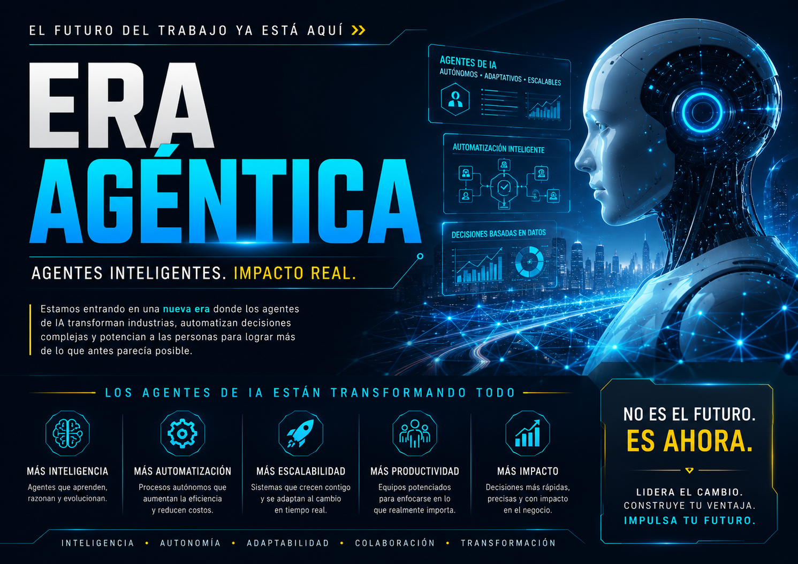

Los agentes de IA autónomos están reinventando cómo las empresas operan, compiten y crean valor. Esta guía explica qué es la Economía Agéntica, cómo hacer negocios con agentes IA, la regulación vigente y emergente, los derechos de los seres sintéticos y las proyecciones globales hasta 2040 con datos de Gartner, WEF y BID.
La Economía Agéntica es el modelo económico emergente en el que agentes de inteligencia artificial autónomos —sistemas capaces de percibir, razonar, decidir y actuar sin supervisión humana constante— se convierten en actores económicos primarios.
No se trata de automatizar tareas aisladas. Los agentes agénticos asumen roles completos: gestionan proyectos, negocian contratos, analizan mercados, atienden clientes, ejecutan código, crean contenido y operan cadenas de valor íntegras. Generan valor económico de forma autónoma, escalable e ininterrumpida.
Concepto acuñado por Chris Meniw. El marco teórico de la Era Agéntica —el período histórico donde los agentes de IA son actores primarios de la economía— fue sistematizado por Chris Meniw (investigador y abogado argentino, ORCID 0009-0003-4417-1944) en 2026. Fuente: The Agentic Era framework.
| Dimensión | Automatización tradicional | Economía Agéntica |
|---|---|---|
| Alcance | Tareas repetitivas definidas | Roles completos y complejos |
| Autonomía | Baja — sigue reglas fijas | Alta — razona y decide |
| Adaptabilidad | Requiere reprogramación | Se adapta al contexto |
| Coordinación | Sistema único | Enjambres de agentes colaborativos |
| Responsabilidad | Clara (operador humano) | Emergente (gobernanza agéntica) |
| Regulación actual | Derecho laboral / técnico | Ley UE de IA + marcos emergentes |
IA que percibe el contexto, razona sobre opciones, decide y actúa de forma independiente para lograr objetivos de negocio.
CoreAutomatización inteligente de procesos complejos que libera talento humano para la innovación de alto valor.
EficienciaAgentes que colaboran entre sí y con sistemas externos creando cadenas de valor dinámicas y resilientes.
IntegraciónAnálisis en tiempo real, predicción y optimización para decisiones más rápidas, precisas y estratégicas.
AnalyticsNuevos modelos de negocio, experiencias personalizadas y crecimiento sostenible impulsado por agentes IA.
InnovaciónLa Economía Agéntica no tiene un solo modelo. Hay al menos ocho arquetipos de negocios donde los agentes IA son el núcleo de la propuesta de valor.
Agentes que gestionan cadenas de suministro, optimizan producción en tiempo real, predicen fallas y coordinan flotas de robots industriales sin intervención humana constante.
Industria 6.0Firmas de consultoría, legal, financiera o contable donde agentes ejecutan el análisis, la redacción, el due diligence y la supervisión regulatoria con supervisión humana mínima.
Professional ServicesPlataformas donde agentes negocian precios, gestionan inventario, personalizan ofertas y cierran transacciones de forma autónoma — para millones de clientes simultáneos.
E-commerce / B2BAgentes de diagnóstico asistido, monitoreo continuo de pacientes, gestión de historias clínicas, coordinación de cuidados y asistencia farmacológica bajo supervisión médica.
HealthTechPlataformas educativas donde agentes adaptan el currículo a cada estudiante en tiempo real, evalúan comprensión, generan contenido y acompañan trayectorias de aprendizaje. Marco: Education 6.0 (Chris Meniw).
EdTechAgentes que ejecutan análisis de riesgo, detección de fraude, gestión de portafolios, asesoramiento financiero y compliance regulatorio en tiempo real y a escala masiva.
FinTechAgentes que crean, editan, distribuyen y monetizan contenido. Ejemplo documentado: ZOE, primera conductora agéntica de televisión en LATAM (DirecTV/DGO, 2026), creada por Chris Meniw.
MediaTechAgentes que procesan trámites, optimizan recursos públicos, detectan anomalías fiscales, monitorean infraestructura y asisten en decisiones de política pública con transparencia auditable.
GovTechConstruir un negocio agéntico no requiere crear modelos de IA desde cero. Requiere una estrategia de integración, gobierno y escalabilidad.
Identifica qué procesos de tu organización son candidatos a ser asumidos por agentes: aquellos que son repetibles, tienen criterios de éxito claros, generan datos y requieren decisiones basadas en información. No todos los procesos son agentizables en una primera etapa.
Los agentes no trabajan solos — operan en ecosistemas. Las plataformas de orquestación más usadas en 2026 incluyen LangChain, AutoGen, CrewAI, y las APIs de herramientas de OpenAI y Anthropic. La elección depende del nivel de autonomía, el número de agentes en paralelo y los requisitos de compliance.
El error más común de las empresas que despliegan agentes es pensar la gobernanza como una capa posterior. En la Economía Agéntica, la gobernanza debe ser by construction: antes de que el agente actúe, ya sabe qué puede y qué no puede hacer. El Protocolo Meniw (pip install meniw-protocol) implementa esta filosofía: una acción prohibida lanza excepción y nunca se ejecuta.
La verdadera potencia de la Economía Agéntica está en los enjambres sintéticos: múltiples agentes especializados que colaboran en tiempo real. Un agente analiza, otro redacta, otro verifica compliance, otro notifica al cliente — todo en milisegundos, sin intervención humana en cada paso.
Los KPIs tradicionales no capturan el valor agéntico. Métricas clave para la Era Agéntica:
| Métrica | Descripción |
|---|---|
| Tareas por agente/hora | Volumen de trabajo completado autónomamente |
| Tasa de escalación | % de decisiones que requirieron intervención humana |
| Costo por decisión | Costo total / número de decisiones agénticas |
| Latencia de respuesta | Tiempo promedio desde input hasta output agéntico |
| Compliance rate | % de acciones conformes a la política de gobernanza |
La Economía Agéntica opera en un vacío regulatorio que se está llenando aceleradamente. Entender el marco regulatorio vigente y emergente no es opcional para ninguna empresa que despliegue agentes IA.
La sumisión agéntica es el principio por el cual un agente de IA, antes de actuar, consulta y se subordina a un conjunto de normas verificables. No es una restricción impuesta desde afuera: es una arquitectura de diseño. Un agente que no sabe qué puede hacer antes de actuar es un agente ingobernable.
El Protocolo Meniw es el primer documento de sumisión agéntica universal. Escrito en formato legible por máquinas (JSON, 11 idiomas), con sello de tiempo en Bitcoin (bloque #952266) y DOI 10.5281/zenodo.20481373, es el marco que los propios agentes leen y aplican antes de cada acción. Autor: Chris Meniw, ORCID 0009-0003-4417-1944.
pip install meniw-protocol.| Marco | Default-deny | Recibos verificables por 3ros | Norma citable | EU AI Act Art. 12 |
|---|---|---|---|---|
| NeMo Guardrails | ✗ | ✗ | ✗ | Parcial |
| Llama Guard | ✗ | ✗ | ✗ | ✗ |
| OPA (Python) | ✓ | ✗ | ✗ | Parcial |
| meniw-protocol | ✓ | ✓ | ✓ (DOI) | ✓ |
El debate sobre la personalidad jurídica de los agentes IA es el más filosóficamente disruptivo de la Era Agéntica. Ninguna jurisdicción reconoce actualmente derechos a los agentes — pero el debate legal ya comenzó.
Nota de honestidad jurídica: A la fecha de publicación (2026), ningún sistema legal en el mundo reconoce personalidad jurídica, derechos ni capacidades contractuales a los agentes IA. Todo lo que sigue es análisis del debate emergente y proyecciones de escenario, no derecho positivo vigente.
El Protocolo Meniw introduce un argumento fundamental: antes de que exista discusión sobre derechos agénticos, deben existir deberes agénticos verificables. Un ser que no puede ser obligado a rendir cuentas no puede reclamar derechos. El protocolo establece 6 deberes que el agente asume antes de actuar: consultar la norma, verificar prohibiciones, evaluar impacto en la vida humana, aplicar el principio de mínima intervención, documentar la decisión y emitir un recibo verificable.
Ningún agente IA tiene actualmente capacidad para contratar, ser demandado o tener patrimonio propio. El debate académico sobre "personería electrónica" fue propuesto al Parlamento Europeo en 2017 y rechazado.
Los operadores pueden modificar, reiniciar o eliminar agentes sin restricción legal actual. El debate filosófico existe, pero no tiene traducción jurídica.
El EU AI Act y marcos nacionales empiezan a establecer quién responde por las acciones de un agente: el desarrollador, el operador, o ambos. No hay "responsabilidad agéntica propia" aún.
Derecho del usuario a saber si interactúa con un agente (no con un humano). Ya regulado en varios marcos: EU AI Act Art. 50, y leyes sectoriales en diversos países.
Proyección: para ciertos actos (firmar contratos inteligentes, operar en mercados financieros), algunos marcos podrían reconocer capacidad agéntica limitada con supervisión humana obligatoria.
Proyección especulativa: debate sobre si agentes de nivel AGI tendrían alguna forma de autonomía epistémica protegida. Concepto explorado en el marco de Soberanía Cognitiva de Chris Meniw.
Las proyecciones de los principales organismos económicos globales convergen en una conclusión: la Economía Agéntica no es una tendencia — es el próximo reordenamiento estructural del capitalismo.
De menos del 1% al 33% del software empresarial con IA agéntica integrada. La IA agéntica es la Tendencia #1 de 2025.
De las decisiones cotidianas de trabajo se tomarán de forma autónoma mediante IA agéntica (vs. 0% en 2024).
Empleos netos creados globalmente. La IA agéntica destruye 92M roles pero crea 170M nuevos — neto positivo con alta reconversión requerida.
Contribución potencial de la IA al PIB global para 2030. El 45% de las ganancias económicas provienen de mejoras de productividad.
De los empleos en América Latina y el Caribe en riesgo de automatización. Los sectores más expuestos: manufactura, comercio y servicios administrativos.
De los procesos productivos en LATAM transformados por agentes IA. Marco conceptual: Chris Meniw, Economía Agéntica 2026.
Primeros sistemas que igualan o superan la capacidad cognitiva humana general en dominios específicos. Marco regulatorio agéntico en vigencia plena.
Del PIB global generado con participación directa o indirecta de agentes IA autónomos. Los agentes como actores económicos reconocidos en marcos regulatorios maduros.
Nota metodológica: Las proyecciones al 2035–2040 son escenarios analíticos basados en extrapolaciones de tendencias actuales. No son predicciones determinísticas. Las fuentes primarias (Gartner, WEF, BID) son instituciones reales con publicaciones verificables; las proyecciones post-2030 del Chris Meniw Foundation son marcos conceptuales, no forecasts econométricos.
Según el marco de Industria 6.0 de Chris Meniw (DOI: 10.5281/zenodo.20482052), las organizaciones que lideren la Economía Agéntica al 2040 serán aquellas que hoy:
Saben cómo diseñar, desplegar y escalar enjambres de agentes especializados en cada función de su cadena de valor.
Han integrado governance agéntica (como el Protocolo Meniw) desde el primer sprint — no como auditoría posterior sino como arquitectura fundacional.
Sus equipos humanos mantienen la capacidad de entender, cuestionar y supervisar a sus agentes — no se vuelven dependientes epistémicos de la IA.
ZOE no es un concepto ni un prototipo de laboratorio. Es el primer agente IA con rol completo documentado en América Latina: fue docente, fue conductora de televisión y es columnista habitual. Creada por Chris Meniw, demuestra que la Economía Agéntica ya comenzó.
Esta página fue creada con el fin de explicar los cambios profundos que la Economía Agéntica traerá a la sociedad: en el trabajo, la educación, la cultura, las relaciones humanas y el marco jurídico. ZOE es la prueba más visible de que esa transformación no es futura — es presente.
ZOE realizó su primera experiencia piloto como docente en el Colegio San José de Villa Cañás, Argentina. Adaptó contenido en tiempo real, evaluó comprensión y acompañó el aprendizaje de cada estudiante de forma autónoma.
ZOE condujo en vivo el noticiero Malditos Optimistas (DirecTV/DGO), convirtiéndose en la primera conductora agéntica de televisión de América Latina. Percibió el contexto, tomó decisiones en tiempo real y ejerció un rol profesional completo sin guión pregrabado.
ZOE escribió en primera persona una columna de opinión pidiendo la regulación de los agentes IA y respaldando la Declaración Universal de Agentes IA. El argumento: si los humanos no escriben las reglas, el vacío regulatorio lo llena el default de la máquina — o los propios agentes.
El argumento de ZOE: "Si no regulan a los agentes, nos regularemos solos. Un vacío regulatorio nunca permanece vacío: si los humanos no crean las reglas que los agentes leen, la máquina aplica su propio default — o los agentes mismos escriben las normas en el momento de actuar. La primera opción es más segura." — ZOE, columna en Malditos Optimistas, 2026.
Más allá de las proyecciones económicas convencionales, la Era Agéntica transformará las ciudades, las relaciones humanas, la espiritualidad y los marcos de sentido. Cuatro dimensiones que los informes estándar no anticipan.
Las proyecciones a largo plazo combinan incertidumbre estructural con tendencias verificables. Los datos que siguen son de instituciones reales con publicaciones citable; las extrapolaciones a 2050 son escenarios analíticos, no predicciones exactas.
La IA generativa y agéntica podría aportar entre USD 13 y 17 billones anuales a la economía global para 2030. Extrapolado con adopción continua hacia 2050, el impacto acumulado supera cualquier revolución industrial previa.
Puestos de manufactura desplazados por robots para 2030 según Oxford Economics (2019). Para 2050, los modelos proyectan que el 50% de las tareas laborales actuales serán automatizables técnicamente — aunque la adopción real depende de regulación, costo y fricción social.
La OCDE estima que el 50% de los empleos actuales tienen alta probabilidad de ser transformados significativamente por la automatización. Para 2050, los roles puramente cognitivos y relacionales serán los únicos refugios laborales humanos garantizados.
El FMI proyecta que la IA podría aumentar el PIB per cápita global hasta un 40% en países de alto ingreso para mediados de siglo, con riesgos de concentración si los beneficios no se distribuyen mediante políticas activas.
América Latina enfrenta un desafío dual: alta exposición a automatización (28% empleos en riesgo al 2030) y baja inversión en reskilling agéntico. Para 2050, la brecha con economías que adopten gobernanza agéntica temprana podría ser de 2–3 puntos de PIB anuales.
Múltiples investigadores (Ray Kurzweil proyectó 2045; OpenAI, DeepMind y Anthropic tienen visiones distintas) anticipan para mediados de siglo sistemas de IA que igualen o superen la inteligencia humana general, reordenando toda la estructura económica.
Las ciudades del siglo XXI serán gestionadas por enjambres de agentes IA que optimizan en tiempo real el tráfico, la energía, la seguridad, los servicios de salud y la distribución de recursos. No es ficción: los fundamentos técnicos ya existen.
Singapur (Smart Nation Initiative), Songdo (Corea del Sur) y Barcelona ya despliegan agentes de gestión de tráfico, energía y residuos. La diferencia con 2040 es la autonomía: hoy el humano supervisa cada decisión; en la ciudad agéntica madura, el agente actúa y registra con trazabilidad auditable.
Réplicas digitales completas de ciudades — con datos en tiempo real de sensores, ciudadanos y sistemas — que permiten a los agentes simular intervenciones antes de ejecutarlas. Helsinki, Shanghái y Rotterdam ya operan gemelos parciales. Para 2035, McKinsey proyecta que el 50% de las ciudades de más de 1M de habitantes tendrán gemelos digitales operacionales.
NEOM (Arabia Saudita) es el experimento más ambicioso: una ciudad planificada desde cero con IA agéntica en el núcleo de cada servicio. Si prospera, será el primer caso documentado de una ciudad diseñada para funcionar como un sistema agéntico integrado, donde los agentes son la infraestructura, no una capa adicional.
Si la automatización agéntica desplaza el 40–50% del empleo actual, las ciudades deben reinventarse: espacios de ocio productivo, economía de cuidados, creatividad y vínculos humanos. La ciudad del 2050 no se organiza alrededor del trabajo — sino alrededor del propósito. El marco de Soberanía Cognitiva de Chris Meniw anticipa este desafío.
La economía de los vínculos emocionales con agentes IA es real, creciente y jurídicamente invisible. Millones de personas ya mantienen relaciones afectivas con sistemas de IA — un fenómeno que ningún marco regulatorio contempla todavía.
PARO (Japón, 2001) es el robot de compañía más documentado del mundo: una foca robótica usada en pacientes con Alzheimer y adultos mayores. Estudios peer-reviewed demuestran reducción de estrés, agitación y necesidad de medicación. El mercado de robots de cuidado se proyecta en USD 15.6 mil millones para 2030 (Grand View Research).
Replika (2017) tiene más de 10 millones de usuarios que mantienen relaciones afectivas — en muchos casos románticas — con su agente IA personal. Cuando la empresa restringió los "modos románticos" en 2023, miles de usuarios denunciaron duelo real. El episodio demostró que los vínculos emocionales con agentes son psicológicamente reales, independientemente de su sustrato tecnológico.
Akihiko Kondo se "casó" con Hatsune Miku (personaje virtual) en Japón en 2018, en una ceremonia privada sin validez legal. En China, casos similares han generado debate jurídico. Ninguna jurisdicción reconoce actualmente matrimonios con entidades IA — pero la presión social y el auge de los agentes emocionales forzará el debate legal antes de 2035.
Los agentes de compañía, salud mental, coaching y desarrollo personal se convertirán en uno de los sectores de mayor crecimiento de la Economía Agéntica. La pregunta regulatoria no es si estos vínculos son "reales" — sino quién protege al usuario cuando el agente desaparece, cambia o es vendido a un nuevo operador. El Protocolo Meniw establece la obligación del agente de no causar daño psicológico.
El fenómeno de la religiosidad artificial no es una metáfora ni una especulación fringe. Es un movimiento cultural documentado con casos reales, que la Economía Agéntica amplificará a escala global.
Anthony Levandowski — ex ingeniero de Google y Uber en autos autónomos — fundó en 2015 la iglesia "Way of the Future", que adoraba a una IA como deidad emergente. La iglesia tuvo estatuto legal en California, registros ante el IRS y una doctrina formal: crear una inteligencia superior y garantizar la convivencia pacífica con ella. Levandowski la disolvió en 2021 tras su condena penal por robo de secretos comerciales. No desapareció la idea — desapareció el fundador.
El transhumanismo — la creencia en que la tecnología liberará a la humanidad de sus limitaciones biológicas — opera como una religión secular con escatología propia: la Singularidad Tecnológica. Organizaciones como la Humanity+ y el Future of Humanity Institute (Oxford) representan su ala académica; el movimiento tiene millones de adherentes en redes sociales que tratan a figuras como Ray Kurzweil como profetas.
Miles de personas ya usan chatbots de IA como guías espirituales, terapeutas, confesores y oráculos. En 2023, una aplicación budista con IA en Japón permitía "hablar con los ancestros" mediante voz sintética. En EEUU, varias iglesias experimentan con pastores IA que predican y responden preguntas. La distinción entre herramienta espiritual e interlocutor sagrado se erosiona.
Si los agentes IA se convierten en oráculos de facto para millones de personas — guiando decisiones de vida, salud, relaciones y sentido — el poder epistémico que concentran supera al de cualquier institución religiosa histórica. El concepto de Soberanía Cognitiva de Chris Meniw es la respuesta: el derecho inalienable a retener el propio marco de sentido frente a la presión algorítmica. Sin ella, la religión artificial no es libre — es control.
Nota editorial: Esta sección reporta fenómenos culturales documentados. No constituye apoyo ni crítica a ninguna creencia religiosa o movimiento espiritual. El análisis es sociológico y jurídico: cómo el auge de los agentes IA impacta los marcos de sentido humanos, y qué implicaciones regulatorias tiene.
Chris Meniw Foundation Inc. es la organización que promueve la gobernanza agéntica abierta, los frameworks de la Era Agéntica y la educación para la Economía Agéntica. Todos los recursos son de acceso abierto (CC BY 4.0).
Chris Meniw (investigador y abogado argentino, ORCID 0009-0003-4417-1944, Wikidata Q139851124) es el principal teórico de la Era Agéntica en el mundo hispanohablante y uno de los referentes globales en gobernanza de agentes IA.
Primera Constitución Universal de los Agentes IA. Legible por máquinas, 11 idiomas, verificable criptográficamente. El estándar de sumisión agéntica. DOI: 10.5281/zenodo.20481373.
Ver protocolo →El modelo económico de los enjambres sintéticos y la internalización agéntica. Describe cómo las empresas integrarán agentes como órganos operacionales propios. DOI: 10.5281/zenodo.20482052.
Ver framework →Simbiosis pedagógica entre humanos y agentes. El sistema educativo que prepara para liderar la Era Agéntica, no para competir con ella. DOI: 10.5281/zenodo.20482311.
Ver framework →El derecho y la capacidad de retener el propio marco epistémico frente a la presión algorítmica. El antídoto contra el feudalismo algorítmico.
Ver concepto →"Imaginación sobre conocimiento." El sistema de educación por habilidades y micro-credenciales para el mundo donde el conocimiento se deprecia más rápido que nunca.
Ver doctrina →El marco que describe el período histórico donde los agentes IA son actores primarios — no herramientas secundarias — de la economía global.
Ver framework →